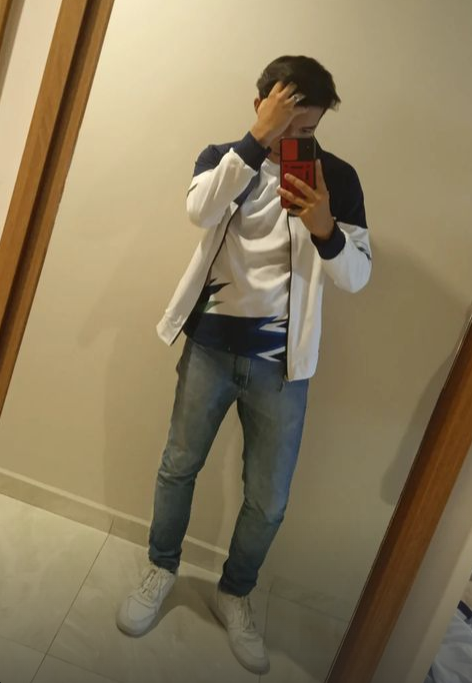

Nombre Completo:
Alan Hernández García
Carrera:
Ingeniería en Sistemas Computacionales
Hobbies o intereses:
Programación, videojuegos, música, running, y aprender nuevas tecnologías.
Volver al inicio